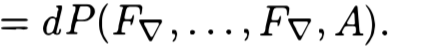

Phone call with Julien — 02/09/18
- can completely forget about the standard atiyah class
- it is really just simplicial chern weil (invariant polynomial applied to a simplicial curvature)
- still working with global (i.e. non-simplicial) bundles
- pullback the bundle to the partial frames, as we did
- the algebraic situation: fibrewise we have a vector space ℂr along with some trivial subspace ℂr−k(+1?)
- lemma. trivial sub-bundle, connection on the whole bundle that is flat on the sub-bundle, then when we apply an invariant polynomial (of the right degree) then this is zero on the whole bundle immediately
- i.e. if it's zero on a high-enough-degree sub-bundle then it is zero everywhere
- so we have our simplicial connection on E, and we can pull it back to p∗E
- this is in my notes somewhere... a linear algebra lemma
- construct another simplicial connection on p∗E such that it is flat on the trivial sub-bundle
- take local splittings of your trivial sub-bundle?
- the difference of these two should be an admissible 1-form
- P of the curvature of the second (simplicial) connection is then zero, and so we can use the huybrecht's lemma to show that P of the first curvature is exact
- really need to use chern classes, not exponential ones, because we need to know that they vanish when in higher degree than the rank (to get our above lemma?)
- but if we pullback the curvature then we might be able to do this (i.e. write it as d of something) directly
- the trivial sub-bundle is not stable under the pullback connection (i.e. the inclusion is not flat), hence why we need another connection that does respect the inclusion, i.e. is flat on the sub-bundle
- we don't have whitney sum formula here yet, because the connection doesn't respect the inclusion of the sub-bundle!
consider 0→Tr−1→E→L→0, and take two connections that are flat on Tr−1, so that their difference gives you a 1-form that vanishes on the hyperplane-  — this is the transgression form in huybrechts! c.f. chern's (91) formula
things shouldn't depend on the choice of the connection flat on the sub-bundle: consider a difference of two, A, which is a 1-form that vanishes on the hyperplane, and also the curvature vanishes on the hyperplane (i.e. trivial sub-bundle), and so K∧A (the transgression form) is zero directly, so there should be an intrinsic way of transgressing, i.e. no dependency on the choice of this auxiliary connection
- the connections that we actually want to consider are those that are trivial (i.e. d) on the trivial sub-bundle, but the choice of this shouldn't matter (by the above broken proof)
- exercise. 0→Tr−1→E→L→0, take the trace of the wedge-2 (in the endomorphism part!) of the curvature of a connection (nothing here is simplicial) on E, and this should be canonically d of something (when we pullback to Tr−1??)
- sketch proof. take some other connection on E that is trivial on Tr−1, and apply huybrechts. then show that this choice of auxiliary connection doesn't matter.
- second fundamental form: take ∇E of some section of some sub-bundle, and then project to the quotient bundle — this is a linear map. this might be useful too!
- somehow the (r−1)-sections of Ω1⊗L should appear in this as well